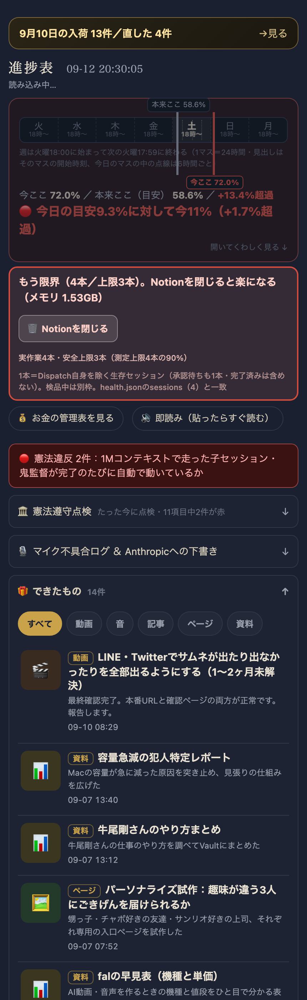
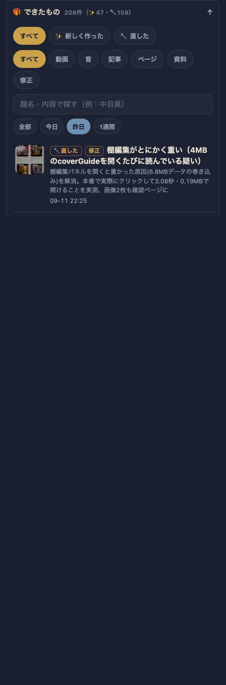
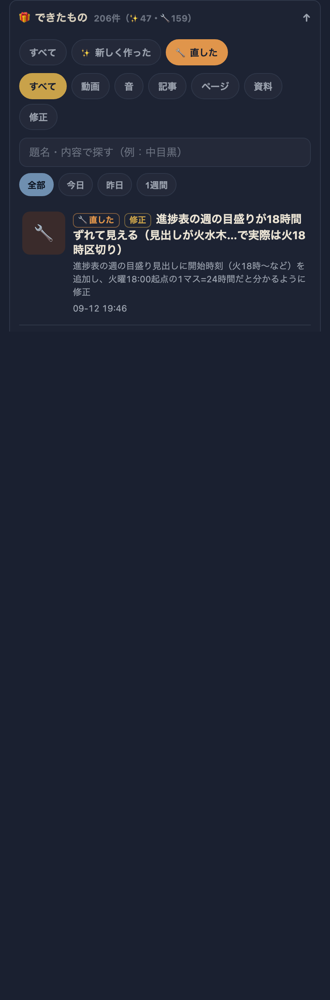
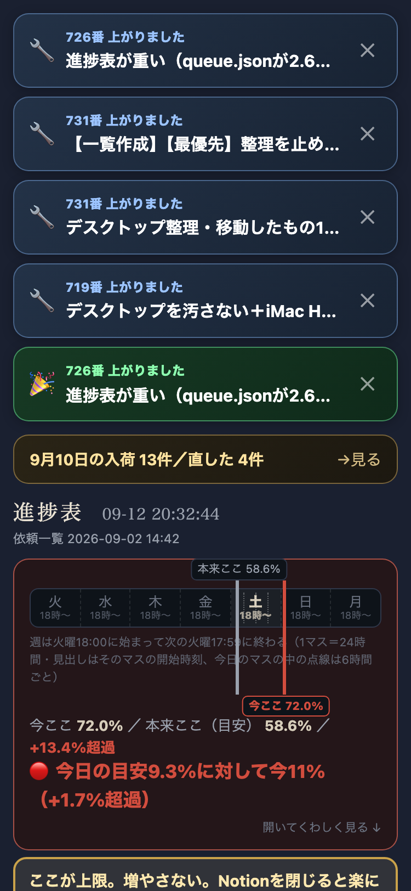

| 確認項目 | 結果 |
|---|---|
| ①新しく作った／直したで分かれているか | ✨47件・🔧159件に分離して表示 |
| ②昨日のものに戻れるか | 『昨日』ボタンで13件に絞り込み実測（09-11分） |
| ③サムネイル付き・押せるか | 各行にサムネ(check頁は実画像・無ければ種類アイコン)、行全体がリンク |
| ④1画面目を圧迫していないか | 開かず折りたたみのまま。375pxスクショで#dekitaSecが最初の画面に出ないことを確認 |
| ⑤古いものは消えないか | 過去分は削除ではなく全部読み込み（246件の完了＋6件のアーカイブを一括で取り込み） |